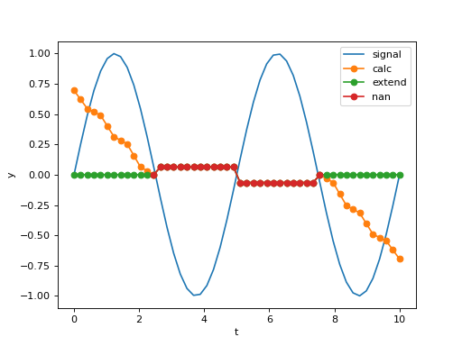

Window module¶
-
araucaria.stats.window.roll_med(data, window, min_samples=2, edgemethod='nan')¶ Computes the rolling median of a univariate array.
- Parameters
data (
ndarray) – Array to compute the rolling median.window (
int) – Size of the rolling window for analysis.min_samples (
int) – Minimum sample points to calculate the median in each window. The default is 2.edgemethod (
str) – Dictates how medians are calculated at the edges of the array. Options are ‘nan’, ‘calc’ and ‘extend’. See the Notes for further details. The default is ‘nan’.
- Return type
- Returns
Rolling median of the array.
- Raises
ValueError – If
windowis not an odd value.ValueError – If
windowis smaller or equal than 3.TypeError – If
windowis not an integer.ValueError – If
edgemethodis not recognized.
Notes
This function calculates the median of a moving window. Results are returned in the index corresponding to the center of the window. The function ignores
nanvalues in the array.edgemethod='nan'usesnanvalues for missing values at the edges.edgemethod='calc'uses an abbreviated window at the edges (e.g. the first sample will have (window/2)+1 points in the calculation).edgemethod='extend'uses the nearest calculated value for missing values at the edges.
Warning
If
windowis less thanmin_samples,nanis given as the median.Example
>>> from numpy import pi, sin, linspace >>> from araucaria.stats import roll_med >>> import matplotlib.pyplot as plt >>> # generating a signal and its rolling median >>> f1 = 0.2 # frequency >>> t = linspace(0,10) >>> y = sin(2*pi*f1*t) >>> line = plt.plot(t,y, label='signal') >>> for method in ['calc', 'extend', 'nan']: ... fy = roll_med(y, window=25, edgemethod=method) ... line = plt.plot(t, fy, marker='o', label=method) >>> lab = plt.xlabel('t') >>> lab =plt.ylabel('y') >>> leg = plt.legend() >>> plt.show(block=False)
(Source code, png, hires.png, pdf)

{kind=link}
{kind=link}